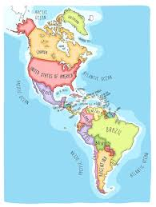
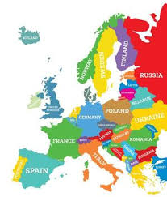
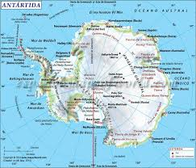

América
Europa
Asia
África
Oceanía
Antártida
- Canadá
- Belice
- Nicaragua
- Venezuela
- Chile
- Bulgaria
- Dinamarca
- Noruega
- Ucrania
- Irlanda
- Filipinas
- Armenia
- Birmania
- Malasia
- Vietnam
- Ghana
- Angola
- Zimbabue
- Uganda
- Kenia
- Fiyi
- Nauru
- Tonga
- Nueva Zelanda
- Palaos
- La Antártida argentina (Argentina)
- La dependencia Ross (Nueva Zelanda)
- Adelia Land (Francia)
- Territorio Antártico Australiano (Australia)
- Islandia Pedro I o Tierra de la Reina Maud (Noruega)
- Antártida Chilena (Chile)
- Marye Byrd (sin pertenencia)




